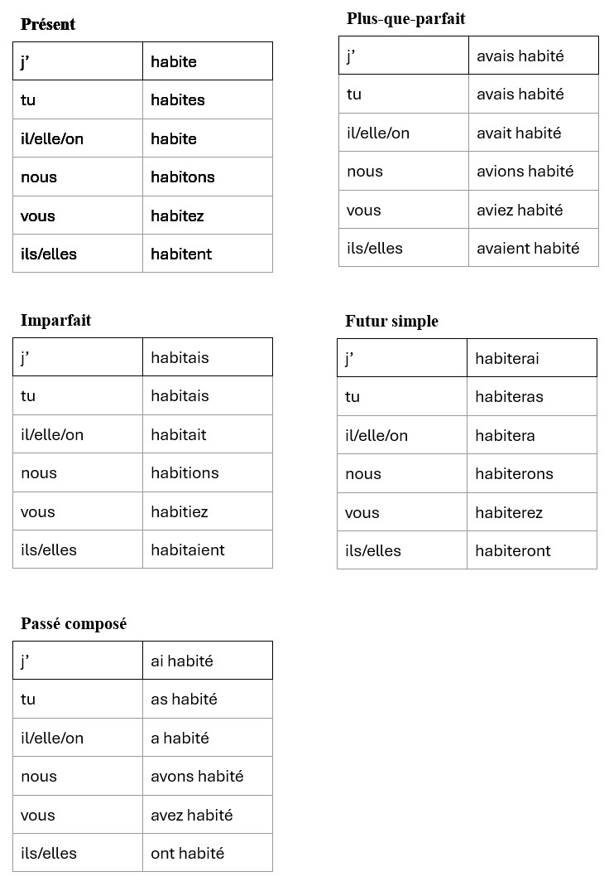

Verben-Liste
Inhaltsverzeichnis – Verben
Regelmässige -er-Verben

Alle regelmässigen Verben auf -er werden wie habiter (wohnen) konjugiert. Die Endungen bleiben immer gleich – nur der Wortstamm ändert sich.
Wichtige regelmässige -er-Verben
- aimer – lieben, mögen
- parler – sprechen
- habiter – wohnen
- regarder – schauen
- écouter – zuhören
- travailler – arbeiten
- jouer – spielen
- penser – denken
- trouver – finden
- chercher – suchen
- donner – geben
- demander – fragen
- appeler – rufen
- arriver – ankommen
- entrer – hineingehen
- rester – bleiben
- tomber – fallen
- porter – tragen
- marcher – gehen
- étudier – lernen
- expliquer – erklären
- corriger – korrigieren
- noter – benoten
- répéter – wiederholen
- chanter – singen
- danser – tanzen
- dessiner – zeichnen
- téléphoner – telefonieren
- inviter – einladen
- visiter – besichtigen
- voyager – reisen
- adorer – sehr mögen
- détester – hassen
- rêver – träumen
- imaginer – sich vorstellen
- laver – waschen
- préparer – vorbereiten
- cuisiner – kochen
- fermer – schliessen
Grammatik – COI & COD
Hier kommen später COI/COD-Erklärungen rein.
Kommunikation & Ausdruck
Hier kommen später Kommunikationsübungen rein.
Texte & Übungen
Hier kommen später Texte rein.
Vokabeln & Redewendungen
Hier kommen später Vokabeln rein.
Kulturelle Aspekte
Hier kommen später Kulturthemen rein.
Weitere Inhalte folgen...
Hier kommen später neue Kapitel rein.